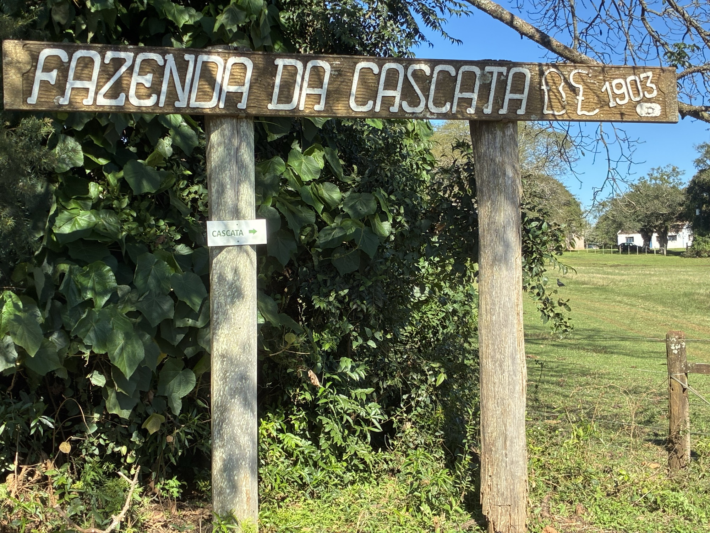

História
Mais de um século de vida no pampa, das antigas sesmarias aos dias de hoje.
Das terras da Sesmaria do Parové
Os campos da Cascata formavam a antiga Sesmaria do Parové, uma das porções de terra distribuídas no período da colonização do pampa gaúcho. Em 1897, essas terras foram adquiridas de Luiza Freitas Valle, recebendo então o nome de Fazenda do Parové.
A região de Alegrete, na fronteira do Brasil com a Argentina, sempre teve a pecuária como vocação. Foi nesse ambiente de campos abertos, coxilhas e cursos d'água que a propriedade se firmou como referência histórica.
A sede de 1903
A sede da fazenda foi construída em 1903 e atravessa mais de um século preservada. Suas construções, currais e estruturas guardam o jeito de viver e trabalhar de gerações que fizeram do campo o seu sustento e a sua morada.
A família Fernandes
A propriedade é mantida pela família Fernandes. José Paulo Dornelles Fernandes herdou a fazenda dos pais e segue cuidando da terra, da memória e das histórias que ali se acumularam ao longo das décadas.
Foi desse cuidado com a memória que nasceu, em 2010, o Museu da Cascata, reunindo objetos que contam a evolução da vida rural na região.

Patrimônio do pampa
Receber visitantes faz parte da rotina da fazenda. Em excursões de turismo rural, grupos percorrem as instalações e conhecem de perto uma propriedade que é referência da história da região.